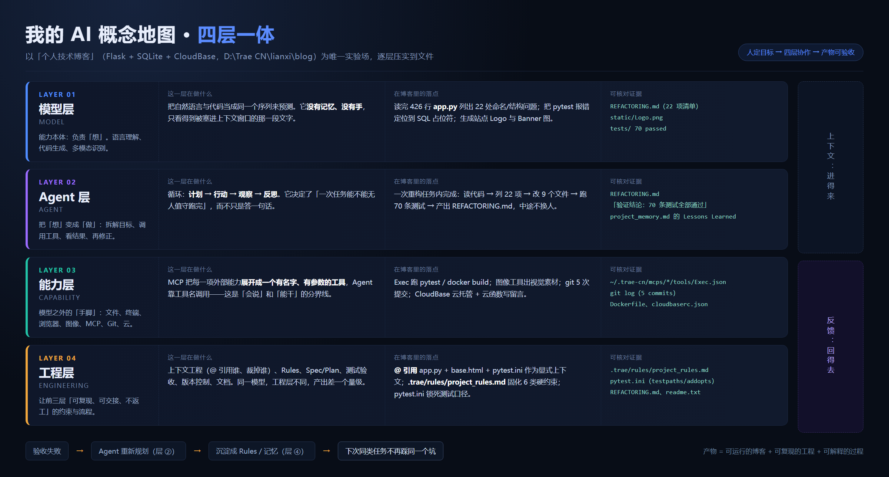
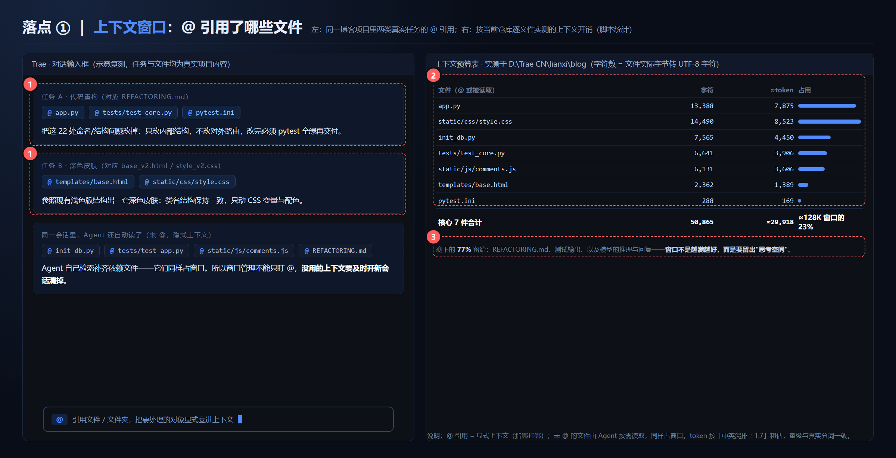
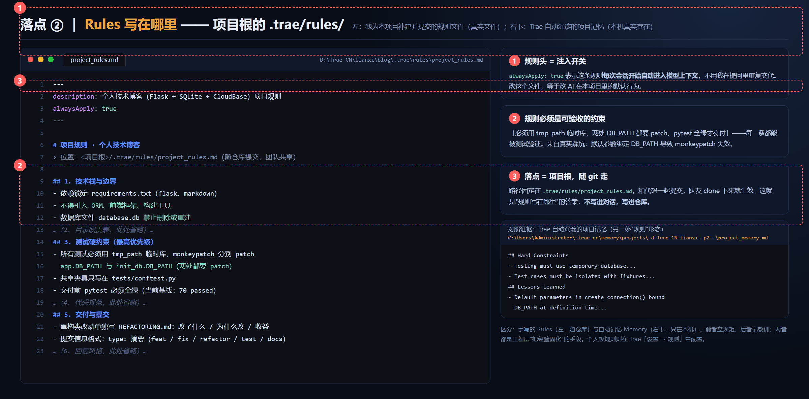
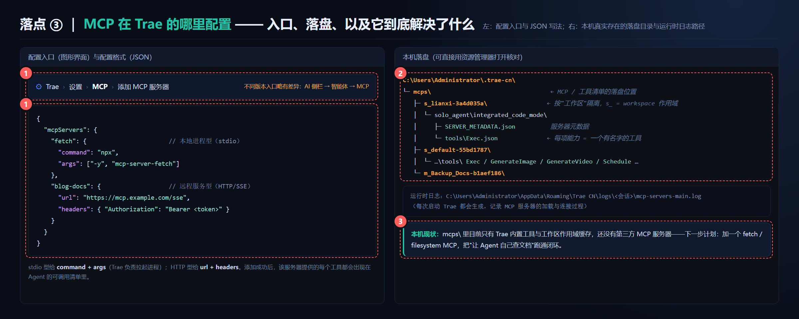

老师给的 AI 概念地图分四层：模型层、Agent 层、能力层、工程层。我把课程里出现过的工具按这个分层重新归位，并在右两列写上"我在博客项目里的真实用法"和"可核对证据"——归类不重要，落点才重要。
| 层 | 课程工具（按类别） | 我在博客项目里的用法 | 可核对证据 |
|---|---|---|---|
| 模型层 | 对话模型（可切换的内置模型）、图像生成模型 | 读 426 行 app.py 列出 22 处重构点；把 pytest 报错定位到 SQL 占位符；生成 Logo / Banner | REFACTORING.md（22 项清单）、static/Logo.png |
| Agent 层 | AI 编程助手（Trae）、Plan/Ask 模式、任务记忆 | 一次任务内完成：读代码 → 列 22 项 → 改 9 个文件 → 跑 70 条测试 → 写重构说明 | REFACTORING.md："验证结论：70 条测试全部通过" |
| 能力层 | 文件读写、终端执行、浏览器预览、MCP、Git、云部署 | Exec 跑 pytest / docker build；git 5 次提交；CloudBase 云托管 + 云函数留言板 | ~/.trae-cn/mcps/*/tools/Exec.json、Dockerfile、cloudbaserc.json、cloudfunctions/ |
| 工程层 | @ 上下文引用、Rules、测试框架、版本控制、部署 | @ 引用核心文件；.trae/rules/project_rules.md 固化 6 类硬约束；pytest.ini 锁死测试口径 | .trae/rules/project_rules.md、pytest.ini、.gitignore |
归位时发现的一个错位：我原先把"MCP"当成一个独立工具来记，实际上它不属于任何一层——它是能力层与 Agent 层之间的接口（把外部能力展开成有名字的工具清单）。这就是重画地图的价值。

用三句话说清层与层的关系（这是我自己的版本，不是照抄板书）：

@，弹出文件/文件夹选择器，选中的对象显式注入本次对话上下文。app.py、tests/test_core.py、pytest.ini；换深色皮肤任务引用 templates/base.html、static/css/style.css。这些文件都真实存在于仓库，体积是脚本逐个实测的。init_db.py、comments.js）会被 Agent 按需自动读取，同样占窗口。所以任务做完开新会话清窗口，是省 token 的第一习惯。
.trae/rules/project_rules.md，随 git 提交、队友 clone 即生效；个人级规则在 Trae「设置 → 规则」里配置，只影响本机。~/.trae-cn/memory/projects/-d-Trae-CN-lianxi--p2-…/project_memory.md，含 Hard Constraints / Lessons Learned），以及 pytest.ini + tests/conftest.py 里的硬约束。本次实验我把它补建了：内容不是编的，每一条都来自真实踩坑——比如"monkeypatch 必须同时 patch app.DB_PATH 和 init_db.DB_PATH"就是重构时真实翻过的车。
command + args；远程服务型写 url + headers。C:\Users\Administrator\.trae-cn\mcps\，按工作区作用域隔离（s_lianxi-* 就是本项目会话的作用域），里面 SERVER_METADATA.json + tools/*.json 就是"能力被展开成工具清单"的直接证据；运行时日志在 %APPDATA%\Trae CN\logs\<会话>\mcp-servers-main.log。mcps\ 里只有 Trae 内置工具与作用域缓存，还没有添加第三方 MCP 服务器。下一步：加一个 fetch / filesystem MCP，把"让 Agent 自己查文档"跑通闭环——这一步做完，能力层才算真正点亮。# 落点①：统计核心文件的上下文开销 cd "D:\Trae CN\lianxi\blog" && python -c "print(sum(len(open(f,'rb').read()) for f in ['app.py','static/css/style.css','init_db.py','tests/test_core.py','static/js/comments.js','templates/base.html','pytest.ini']))" # → 50865 字符 ≈ 3 万 token # 落点②：确认规则文件存在 type "D:\Trae CN\lianxi\blog\.trae\rules\project_rules.md" # 落点③：确认 MCP 落盘目录 dir "C:\Users\Administrator\.trae-cn\mcps"